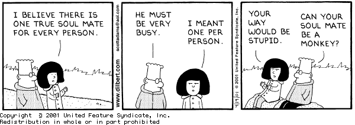
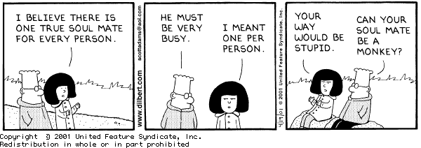

|
Exploration & Proof Fall 2006 |
 |
|
Exploration & Proof Fall 2006 |
 |
| Lecture: | MWF 9:10-10:00 TH 409 |
| Prerequisites: | MATH 226 (Calculus I) with a grade of C or better or consent of the instructor |
| Instructor: | Dr. Matthias Beck | ||||
| Office: | Thornton Hall 933 | ||||
| Office hours: |
|
& by appointment | |||
| Phone: | +1 415 405 3473 | ||||
| Email: |
|
Mathematics is a powerful and flexible language that can be adapted to solve a wide array of problems from many areas. Mathematics connects seeming disparate subjects and provides a unifying philosophy behind logical thinking. Calculus students are acquainted with mathematics as a computational tool but are usually not familiar with mathematics as a language that helps us to explore possibilities, discover conjectures, and prove or refute them. MATH 301 is designed to help students make the transition to more advanced mathematics, where discourse and proof are emphasized. The goals of the course are to improve students' abilities to
Texts: M. Beck, Axioms, theorems, proofs, and all that. Variations on a theme of Ross Geoghegan. These lecture notes are available on the Blackboard course webpage.
Grading system & exam dates:
|
|
I want to ensure that each of you accomplishes the goals of this course as comfortably and successfully as possible. At any time you feel overwhelmed or lost, please come and talk with me.
Homework: I will assign homework problems as we go through the material. We can discuss the homework problems at any time during class. I will assign certain problems to be handed in; they will be due on the Wednesday class of the following week. You may hand them in early to be able to correct your mistakes. Although you may (and should) work together with your class mates, the solutions you hand in have to be your own. I expect well composed solutions; you may want to experiment with Math typesetting programs.
Quizzes: I will frequently check your progress through unannounced quizzes given at the beginning of class. A quiz will typically test your concept of a certain definition or concept. There will be no make-up quizzes. At the end of the semester, I will drop the lowest of your quiz grades.
Term paper: This is a project you will be working on throughout the semester. The topic is up to you but needs to be checked with me. Topics could be anything from the history of a mathematical concept to subjects that go beyond the lecture notes. Here is a list of possible topics, but you should feel free to come up with your own ideas. I expect that you will have found a topic by the end of September. A first, possibly incomplete, draft is due on October 27. You will correct each other's drafts; the corrections are due on November 10. The final version of your paper is due on December 15, the last day of classes. As with your homework, you may hand in your paper early to be able to get feedback from me.
The way to learn math is through doing math. It is vital and expected that you attend every lecture. You will get a good feel for the math from there, but it is even more crucial that you do the homework. Working in groups is not only allowed but strongly recommended. The Blackboard system allows you to send emails to anybody in your class. Blackboard also features an online discussion board. Contact each other and work together.
Some more general fine print:
SFSU academic calender
Math typesetting programs
Tutoring
CR/NCR grading
Incomplete grades
Late and retroactive withdrawals
Students with disabilities
Religious holidays
This syllabus is subject to change. All assignments, as well as other announcements on tests, policies, etc., are given in class. If you miss a class, it is your responsibility to find out what's going on. I will try to keep this course web page as updated as possible, however, the most recent information will always be given in class. Always ask lots of questions in class; my courses are interactive. You are always encouraged to see me in my office.

"One cannot understand... the universality of laws of nature, the relationship of things, without an understanding of mathematics. There is no other way to do it."
Richard P. Feynman